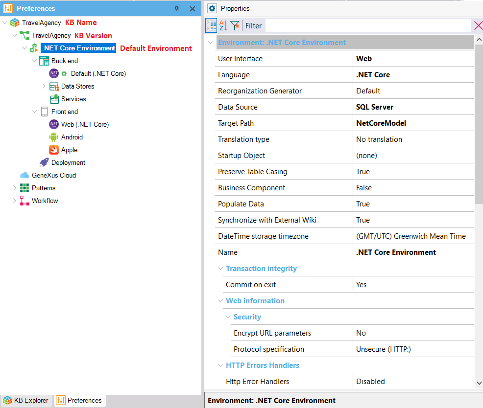

One of the benefits of using GeneXus is that it makes possible the generation of applications running on many different platforms (from a Web interface, a watch, cell phone, tablet or TV, to cloud server farms), generating code in different programming languages and storing the application data in different databases.
An Environment allows you to set and store all the information related to a certain implementation of your application (the generators you want to use to generate the Back end of your application, the generators to be used to generate the Front end, the database information, etc.).
When creating a Knowledge Base, a default Environment is created. The "Create Knowledge Base" dialog, in addition to asking you for the Knowledge Base name and path, it requests you to select the programming language to be used to generate the code corresponding to the application Back end as well as the programs to create/modify the database structure (called Reorganization programs). The rest of the Environment information must be configured through its properties.
So, after the Knowledge Base creation, you can verify the default Environment is created by selecting the Preferences tab located next to the KB Explorer tab:

The default Environment name (i.e. ".NET Core Environment", "Java Environment", etc.) can be changed by editing the Name property. In the same way, if you want to change the programming language you can modify the Language property. And so you can set the different Environment properties.
An Environment is made up of the following nodes:
The Back end node defines:
It shows the generators available to generate the Front end of the application so that you can configure their properties. By default, the generators shown are: .NET Core, Android, and Apple. You can add the Angular generator by setting the Front end Generate Angular property to Yes.
This node allows you to define different Deployment Unit objects.
Each Environment stores the details corresponding to a specific application implementation.
To define a new Environment, being positioned on the KB Version node or on the Default Environment node, right-click and select "New Environment". The New Environment dialog will be opened.
Only one Environment can be active at a time, which means that will be the one used to generate the application, reorganize the database, and run when pressing F5.
The one active by default is the Default Environment.
To get an Environment "active", right-click on its name (over the root node of the environment tree) and click on "Set As Target Environment". When it becomes active, the name of the Environment is highlighted with bold case and the icon next to the name shows a green arrow (i.e. "PLAY" symbol) to indicate that that Environment will be the one used.
An inactive Environment is indicated with its name case not bold and the icon next to the name shows two parallel pipes (i.e. "PAUSE" symbol), indicating that the Environment will not be used in generating, nor in connecting to a database.
When changing Environment properties usually a Rebuild all is needed, for more details check Applying property changes.
| Sub Categories | ||
| Category:Data Stores | Category:Data Stores (GeneXus 16) | Category:GeneXus Generators |
| Category:GeneXus Generators (GeneXus 16) | Category:Workflow Environment Preferences |
| Pages | ||
| Applying property changes | Layout Metadata Directory property | Temp media directory property |
| Translation Type Property |